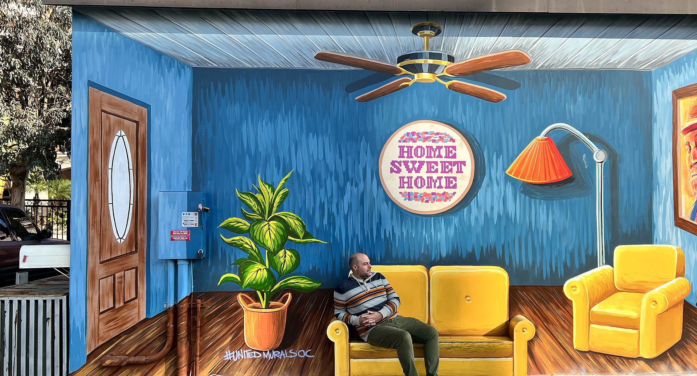

Scale engineering orgs
Team topologies, ownership boundaries and delivery mechanisms that keep quality high and technical debt low as headcount and geographies multiply.

Engineering leader · Spain · working globally
I build the engineering organizations that ship things millions of people use — and the leaders who run them.
Manager of managers
Prime Video · Kindle Fire Appstore · Amazon Groceries · Amazon Business
About
I lead organizations of managers and multi-disciplinary teams that architect and deliver enterprise-tier software. At Amazon I have helped launch and scale four businesses that now generate billions in revenue: Prime Video, the Kindle Fire Appstore, Amazon Groceries and Amazon Business, from Seattle and London to Irvine and Madrid.
My job is to align technical vision with business reality: define the multi-year strategy, design the team topology that can actually deliver it, then remove everything in the way. The products my organizations ship serve millions of customers worldwide.
The part I care most about is people. As an official Amazon Bar Raiser I set and defend hiring standards. Day to day I grow SDMs and staff-level engineers into leaders who operate autonomously, in teams built to be diverse on purpose, because that is where the non-obvious ideas come from.
Outside the day job I am an entrepreneur: co-founder and CTO of tuuth, and co-founder of four other companies. Also a published author, an unapologetic tech geek, and never far from the sea.
What I do
Team topologies, ownership boundaries and delivery mechanisms that keep quality high and technical debt low as headcount and geographies multiply.
Mentoring and promoting SDMs, role changers and senior engineers. High performance and psychological safety together, which is what industry-leading retention actually looks like.
Six-pagers, PR/FAQs and OP1/OP2 planning turned into scalable architecture and executable roadmaps, with the cross-org risks named before they bite.
Bar Raiser work: calibrating standards across an organization, designing loops that surface signal, and stripping bias out of the decision.
Path
Prime Video, Kindle Fire Appstore, Amazon Groceries, Amazon Business. Seattle, London, Irvine, Madrid. Organizational design, tier-1 delivery, international launches, Bar Raiser.
Product, codebase, brand and data platform. Business plan and commercial structuring alongside the engineering.
Company setup in the UK, factory and sales strategy, long-term value from customers, markets and relationships.
Web apps and web presence for small and medium companies. PHP, CodeIgniter, WordPress, PrestaShop, MySQL, Linux.
Senior web developer and IT director across London, Madrid and Prague. Standards-compliant front-end, CMS builds for marquee clients, mentoring junior developers.
PrestaShop 1.5 Beginner's Guide — a hands-on guide to building and running a PrestaShop store.
Web Summit Alpha selection. Amazon award for exceptional support on recruiting.
Computer Engineering — Universidad de Huelva and Czech Technical University in Prague.
FAQ
Questions I get by email, and the answers I would give you on a call.
A software engineering leader based in Spain, with dual Spanish and US citizenship. 15+ years at Amazon leading distributed engineering organizations that launched Prime Video, the Kindle Fire Appstore, Amazon Groceries and Amazon Business, from Seattle, London, Irvine and Madrid. Manager of managers, official Amazon Bar Raiser, entrepreneur, and author of PrestaShop 1.5 Beginner's Guide.
Running organizations of managers and multi-disciplinary teams: SDMs, SDEs, TPMs and QAEs. Organizational design, multi-year technical strategy, operational excellence, and end-to-end delivery of high-availability tier-1 systems serving millions of customers.
An interviewer trained to protect hiring standards independently of the hiring team: calibrating the bar, mitigating bias in the loop, and holding veto power on a hire. I am an official Bar Raiser and have been recognised with an internal award for recruiting support.
Yes, and I enjoy it. Engineers moving into management, managers stepping up to manager-of-managers, founders building their first engineering team, and anyone preparing for an Amazon-style interview loop. Email me and tell me what you are working on.
Andalusia, Spain, working with distributed teams across Europe and the US. Previously Seattle, London, Irvine, Madrid, Los Angeles and Prague.
Co-founder and CTO of tuuth. Co-founder of Calizombia, Lost Games Entertainment, Gluetip and Mediabetes. Before management, a decade of hands-on web engineering.
Get in touch
I am an extrovert who genuinely likes conversations with strangers. Mentorship, coaching, a second opinion on your architecture or your org chart, or an idea you want to pressure-test: it all starts with one email.